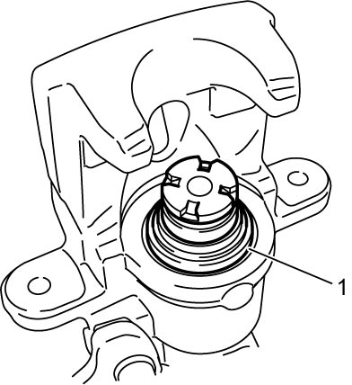
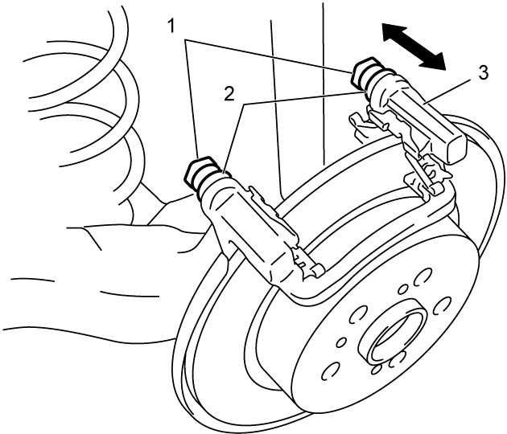
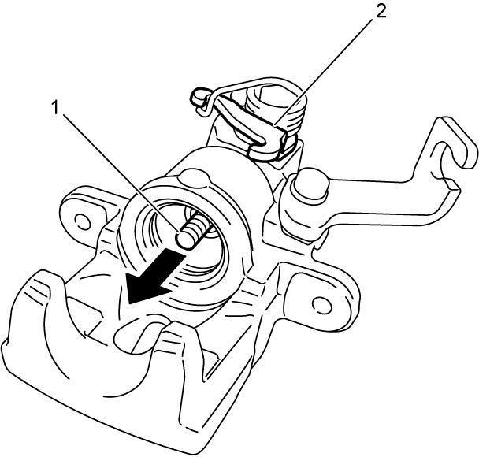

4C
| Rear Brake Caliper Inspection |
NOTE:
Perform this inspection in the following cases.
•When replacing the brake pads with new ones.
•When checking thickness of brake pads.
•Before reassembling rear brake caliper.
•When checking thickness of brake pads.
•Before reassembling rear brake caliper.
Caliper and Caliper Carrier
Check rear brake caliper and rear brake caliper carrier for deformation, crack, damage and rust. Replace rear brake caliper or rear brake caliper carrier if any defect is found.
Cylinder Boot
Check cylinder boot (1) for breaks, crack and brake fluid leakage. If check result is not OK, replace cylinder boot.

 "Expand image")
Slide Pin
Check that slide pins (1) move smoothly in axial directions before installing rear brake caliper to caliper carrier (3). Replace slide pins (1) and pin boots (2) if check result is not OK.

 "Expand image")
Caliper
Push in adjustment bolt (1) by hand. Then check that adjustment bolt moves in arrow direction when lever (2) is moved. If check result is not OK, replace rear brake caliper.

 "Expand image")